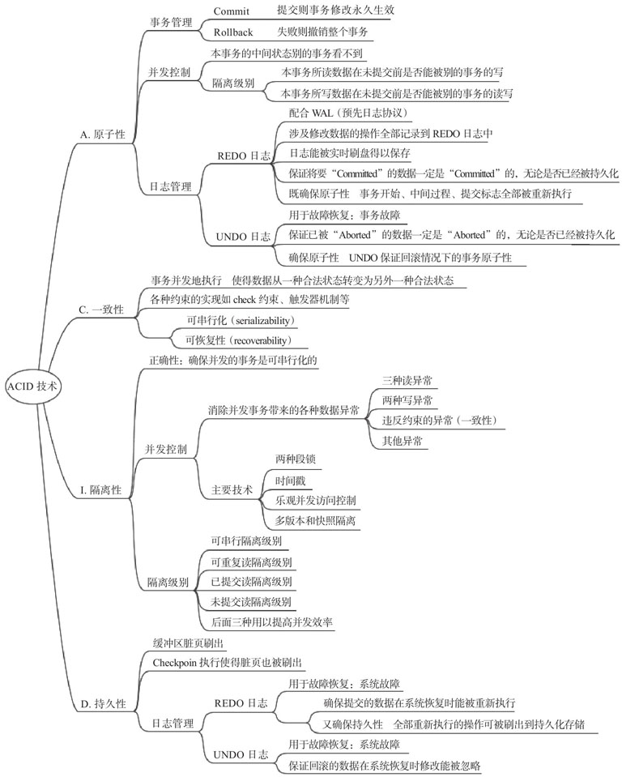

本文节选<数据库事务处理的艺术:事务管理与并发控制>

InnoDB使用锁和MVCC技术实现了并发事务的访问并发控制。
其中，锁是并发控制的基础，在此基础上，实现了MVCC机制，用以提高基于锁的方式带来的低效问题，使得读-写、写-读两种操作互不阻塞，提高了单纯基于锁技术的并发效率。
SELECT操作在“REPEATABLE READ”和“READ COM-MITTED”级别下，使用的是基于MVCC机制的快照做一致性无锁读，所以读数据不加锁。
只有“SERIALIZABLE”级别，读数才加锁但也在使用MVCC技术获取一个可串行化的快照并判断元组的可见性。
下面我们讨论InnoDB的锁的种类。
为了实现基于锁的并发控制，InnoDB实现了多种类型的锁，包括在索引组织表上实现行级的记录锁（Rocord lock）、间隙锁（gap）和元组所与间隙锁组合而成的范围类型的锁“Next-key”、类似“gap”锁的插入意向锁（Insert intention lock），以及支持空间索引的谓词锁（Predicate Lock）。这些锁的实现，既依赖于封锁原理又依赖于InnoDB特定的表组织结构，然后实现不同的封锁作用。
此外，InnoDB支持一种称为自增锁（AUTO-INC Lock）的锁，自增锁类似Oracle和PostgreSQL中的序列对象，也类似SQL Server中的自增列。
严格地讲，这种锁和并发访问控制用于互斥并发事务操作的锁不属于同一类型，类似系统级的共享资源上施加的对象互斥锁，因此我们不做深入探讨。
下面我们详细讲述这些不同类型的锁。
- 记录锁（Record Locks）
InnoDB的锁的粒度是行级锁，这样的行级锁在InnoDB中称为记录锁“record lock”（实则是索引上的记录之锁）。
因为InnoDB的表的组织结构，是一个索引组织表（Oracle支持堆表，也支持索引组织表；PostgreSQL只支持堆表，不支持索引组织表；Innodb只支持索引组织表），所以在真实的元组之上存在一棵构建在主键上的B+树，这棵B+树的树根节点是获取数据的入口。
因为有这样的B+树索引存在，使得InnoDB对数据的扫描方式（MySQL的优化器支持全表扫描和索引扫描的概念，但全表扫描的实现方式，还是先在B+树上执行，然后通过叶子节点间的指针完成顺序扫描，这种扫描方式施加的是表级锁），首先是在B+树上进行的，所以InnoDB提供的记录锁，实则是在B+树上的索引记录锁。
需要注意的是，InnoDB的记录锁是针对索引加锁，不是针对物理记录加锁，所以虽然是访问不同行的记录，但是如果是使用相同的索引键，将出现锁冲突。
从这点看，InnoDB的记录锁锁定的范围大于其他数据库如PostgreSQL行锁锁定的范围，粒度有些粗，这意味着并发度低。
- 间隙锁（Gap Locks）
两个索引项（索引记录）之间的间隔，称为间隙，把这个间隙视为一个对象，在此对象上加锁，就是间隙锁（gap lock）。
第一个索引项之前和最后一个索引项之后的间隙，也可以施加间隙锁。
间隙锁和共享锁、排它锁等锁的粒度的分类角度是不同的，前者基于锁要施加的对象，后者从操作的类型角度出发表达加锁的操作类型。
所以实践中可以看到，存在有“共享间隙锁”“排他间隙锁”等说法是正确的。
在InnoDB中，间隙锁有时存在需要合并的可能。
例如，事务T1因执行查询语句在索引项值为“8”之前的间隙上持有一个共享间隙锁，事务T2因执行清理（purge操作）打算在同一个间隙上持有排他间隙锁，按照InnoDB锁的相容性表5-1看，共享锁排斥排它锁获取，但是因为加锁对象是间隙，InnoDB则允许这两种锁合并。
间隙锁的主要作用，就是和记录锁组合成为Next-Key锁，解决幻象异常现象。
间隙锁在不同的隔离级别下，存在有不同的作用范围。能发挥间隙锁作用的，是“REPEATABLE READ”隔离级别，在这个级别下使用带有间隙锁的Next-Key锁，解决了幻象的问题（具体解决方式参加下一个标题的内容）。
如果隔离级别是“READ COMMITTED”，则间隙锁的作用仅在如下情况下有效：
- 外键约束（foreign-key constraint）检查。
- 重复键（duplicate-key）检查。
- 半一致（semi-consistent）读：执行UPDATE语句的时候，InnoDB返回处于已经提交状态的最新的元组给MySQL Server，由MySQL Server决定得到的元组是否满足UPDATE的WHERE条件。使用半一致读时间隙锁被边使用边释放。
间隙锁在隔离级别是“READ COMMITTED”时，不能在搜索（searches）和索引扫描（index scans）时起作用。
- Next-Key Locks
Next-Key锁，由记录锁和此记录前的间隙上的间隙锁组成。
下面我们举例说明Next-Key锁在“REPEATABLE READ”隔离级别下是如何解决幻象问题的。
假定InnoDB的索引包括10、18、53和80，在“REPEAT-ABLE READ”隔离级别下，执行查询时，因为Next-Key锁存在，则Next-Key锁的锁定范围如下：
- （-∞，10]：锁定索引项10和10之前的间隙，因为10之前没有其他索引项，所以为负无穷。
- (10，18]：锁定索引项11，同时锁定10和18之间的间隙。不包括10，包括18。
- （18，53]：同上。
- （53，80]：同上。
- （80，∞）：锁定索引项80和80之后的间隙，因为20之后没有其他索引项，所以为正无穷。
假定事务T1查询条件为“WHERE key=10”，事务T2执行NSERT操作，条件也是“WHERE key=10”，因为事务T1施加了Next-Key锁在（-∞，10]上，导致事务T2不能获取锁处于等待状态，这样就不能发生幻象异常。
如果隔离级别是“READ COMMITTED”，因为间隙锁不能起作用，对于上述索引事例和WHERE条件，索引项10上因不能有间隙锁，则锁的范围就是[10，10]，即只能锁定已经存在的索引项10这个对象，新插入的对象10不可能被事务T1锁定，所以事务T2的插入操作能够成功，导致幻象异常发生。
Insert Intention LocksInsert Intention锁，基于间隙锁，专门用于INSERT操作。
在一个Next-Key锁锁的范围内，对于不产生冲突的INSERT操作，尽管存在间隙锁排斥其锁定的范围内进行的其他操作，但是此处开放一个小特权，就是允许不产生冲突的插入操作得到执行。这样能够提高插入操作的并发度。
例如，假定事务T3插入13，事务T4插入15，事务T5插入16，这三个事务在如前面的索引上，插入数据的范围在（10，18]内，且插入的值分别是13、15、16，互不冲突，则Insert Inten-tion锁表明这三个事务的插入操作是被允许的。这就是Insert In-tention锁。
Predicate Locks for Spatial Indexes
InnoDB支持空间索引，如果使用Next-Key锁来支持空间索引，则不能胜任，这是因为普通的索引都是键值类型，意味着索引存在一个方向，这个方向是单向的，要么是升序方向要么是降序方向，这个方向的存在，使得数据库引擎可以利用索引进行常规的范围查询。
但是，在空间数据类型面前，这个单向的有序变得失去了作用，因为空间数据是多维多向的，是以区域或空间为范围的，没有确定的方向顺序，所以单向的Next-Key锁便不再能使用。
空间索引是建立在“Minimum Bounding Rectangle（MBR）”上的，InnoDB为索引项上的MBR增加了一个谓词锁，实现空间索引上的并发控制。
锁的施加规则
MySQL支持各种SQL语句，从事务的角度看，对于SQL语句的认识，应该从并发控制技术的角度来进行。MySQL的Inn-oDB对于SQL语句提供了事务操作的支持，而这样的支持是采用并发控制技术中的封锁技术完成的，所以在此我们基于事务锁来讨论锁的施加规则。
SQL语句可以分为数据定义语言（DDL）、数据控制语言（DCL）、数据查询语言（DQL）、数据操纵语言（DML）四种类型的语句，前两种语句，涉及的对象在数据之上，所以加锁的范围，通常是表级，对应表级锁。后两种语句操作的对象是数据，加锁的范围，通常是数据级，这就对应行级锁。但是，也有例外，如DDL语句中的ALTER TABLE语句包括丰富的子句，不同的子句操作的对象的级别是不同的，如重命名表对象操作的是表，而修改列的数据类型，操作的即包括表的元数据又包括表的数据对象。
下面对于SQL语句的锁的施加规则的分析，则包括了表级或行级加锁的行为。
SELECT…FOR UPDATE或SELECT…LOCK IN SHAREMODE：首先，对扫描过的行加锁（索引的记录上施加锁），如果扫描过的行不满足WHERE条件，则释放锁。但有的时候，锁的释放并不是很及时，例如UNION操作下被扫描过的行可能被放到临时表中，这时锁不会释放，只有在查询结束后才被释放。
ALTER TABLE…LOCK[=]{DEFAULT|NONE|SHARED|EXCLUSIVE}：在指定的表上施加读锁或排它锁。
CHECKSUM TABLE：为指定的表施加读锁。读取数据符合一致性读。类似的还有ANALYZE/CHECK TABLE/OPTIMIZE TABLE/REPAIR TABLE等操作。
CREATE TABLE…SELECT…：其中的SELECT操作符合SELECT语句的加锁规则；只是不能带有FOR UPDATE子句。 •DELETE FROM…WHERE…：在索引项上施加排他Next-Key锁。
HANDLER tbl_name OPEN/READ：直接访问MYISAM/InnoDB表时，不加锁，不能确保数据的一致性。 •INSERT：在被插入的索引项上施加记录锁（也叫插入意向锁）。
INSERT…ON DUPLICATE KEY UPDATE：在被插入的索引项上施加排他Next-Key锁。
INSERT INTO T SELECT…FROM S WHERE…：对于被插入到表T中的元组，在其对应的索引项上施加排他记录锁。如果隔离级别是“READ COMMITTED”则在表S对应的索引项上不加锁，这是一个一致性读操作；否则，施加共享Next-Key锁。
FLUSH TABLES WITH READ LOCK：关闭了所有的表之后，对所有的表施加一个全局的读锁。
FLUSH TABLES tbl_name[, tbl_name]…WITH READLOCK：在指定的表对象上获取表级的读锁。但是加锁的过程存在不同的锁切换的过程，详细参见MySQLL官方手册。但是，本条命令和上条命令在施加锁的时候，还需要根据隔离级别进行区别，详情参见11.5.3.3节对于ha_in-nobase::store_lock()函数的分析。
LOCK TABLES t1，…，tn[READ[LOCAL]|[LOW_PRI-ORITY]WRITE]：带有“READ”子句是施加表级读锁；带有“READ LOCAL”子句是在施加表级读锁的时候，还允许并发插入操作，但是对于InnoDB的表本条不适用；带有“WRITE”子句是施加表级写锁，排斥其他SESSION并发访问被加锁的表；带有“LOW_PRIORITY WRITE”子句只是兼容早期的版本，不再有实际效果。
REPLACE INTO t SELECT…FROM s WHERE…或UP-DATE t…WHERE col IN（SELECT…FROM s…）：SELECT语句作为子查询出现在其他子句中，则对标s中的数据对应的索引项施加共享Next-Key锁。
REPLACE：如果不会在唯一键上发生冲突，则REPLACE执行时施加的锁和INSERT相同。否则，冲突发生，则对要被替换的对象对应的索引项施加排他Next-Key锁。
SELECT…LOCK IN SHARE MODE：在索引项上施加共享Next-Key锁。
SELECT…FROM…FOR UPDATE：在索引项上施加排他Next-Key锁。这样的锁阻塞SELECT…LOCK IN SHAREMODE操作但不阻塞SELECT…FROM这样的一致性读操作。
SELECT…FROM通常作为一个一致性读操作发生，是不需要施加任何锁的。但是，在隔离级别为“SERIALIZABLE”时需要在索引项上施加相应的共享的Next-Key锁。
UPDATE…WHERE…：在索引项上施加排他Next-Key锁。如果一个表上定义了外键约束，那么在触发约束条件被检查的元组所对应的索引项上，无论是执行INSERT、UPDATE、DELETE中的哪种操作，无论约束检查是否成功，都会被施加共享Next-Key锁。
LOCK TABLES会在MySQL Server层设置表级锁，InnoDB此时不会加锁。对于InnoDB而言，参数设置为“innodb_ta-ble_locks=1”，InnoDB会知道MySQL Server层设置了表级锁，否则不知。如果InnoDB不知道MySQL Server层设置了表级锁，则极容易发生死锁，这是因为MySQL Server层和InnoDB各自不知道对方的加锁解锁情况，死锁检测机制是无法进行检测的，实践中需要特别注意。
InnoDB基于MVCC的并发控制
InnoDB在基于锁的并发控制技术基础上，实现了MVCC技术。InnoDB的MVCC技术，有这样几个特点：
- 事务的标识，依靠事务ID，是一个全局唯一的64bits数值。
- 多版本，是元组级的多版本，而不像Oracle实现的是页面级的多版本。
- 最新的数据存储在数据页面中，其他数据的旧版本存储在回滚段中。
因为InnoDB的多版本是元组级的版本，所以在每个记录上，有一些与并发和回滚等与事务相关的隐含字段，分别为：
- DB_TRX_ID：6字节长，表示上一个执行插入或更新操作的事务。
- DB_ROLL_PTR：7字节长，表示旧版本的数据位于回滚段中的位置，指向的是一个旧版本。只有元组被更新，才会有新版本产生，旧版本被置于回滚段。因此一致性无锁读操作按照“read view”快照需要读取旧版本时，只能根据事务ID到回滚段中寻找旧版本。
- DB_ROW_ID：6字节长，表示执行插入操作后生成的单调自增长的行的ID标识，如果存在聚集索引，索引项则包括的是这个DB_ROW_ID值。
- DELETE_BIT：删除标志位。
位于回滚段中的UNDO日志分为两种：
- INSERT UNDO logs：插入到回滚段的日志，仅用于事务提交时使用，当事务提交，则插入UNDO日志里的内容被清除。
- UPDATE UNDO logs：被用于一致性无锁读，为一致性读提供快照隔离下的可被读取的老版本数据。当没有需要满足一致性读的快照时，一些老版本数据才被清理。
InnoDB依靠MVCC解决封锁技术禁止的写-读、读-写并发操作，提高了并发事务的并发程度。